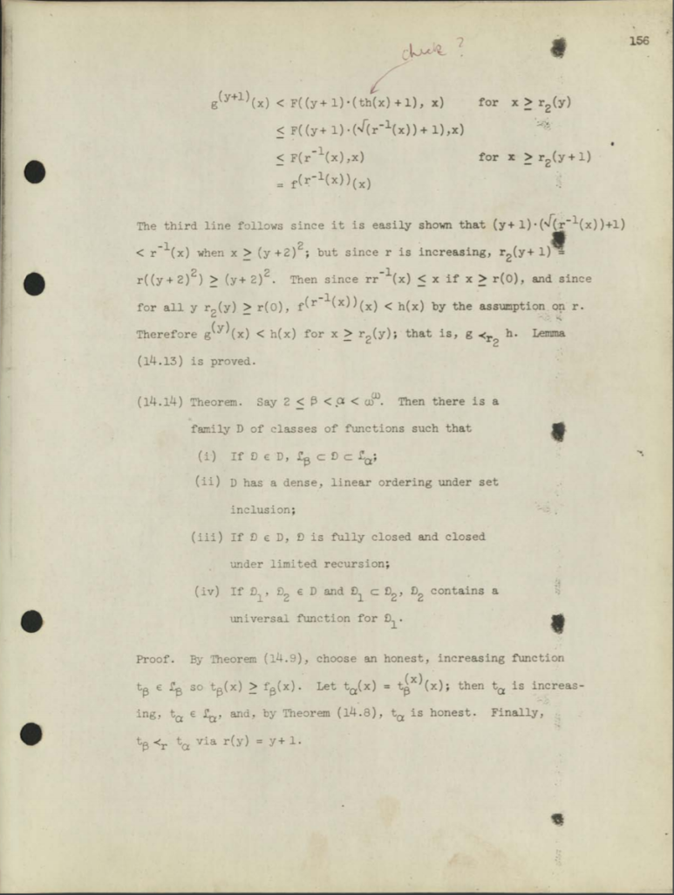

Оглавление
Утерянная диссертация Ритчи
Многие из вас, дорогие читатели, слышали о Деннисе Ритчи. В конце 1980-х В конце 1960-х он оставил аспирантские исследования в области прикладной математике в Гарварде ради должности в Bell Telephone Laboratories, где и проработал всю жизнь. Вскоре после поступления на работу в Labs Ритчи объединил свои усилия с Кеном Томпсоном для создания фундаментальной пары, породившей весь последующий цифровой мир: операционной системы Unix и языка программирования C. Томпсон вёл разработку ОС, а Ритчи занимался созданием C, на котором Томпсон переписал Unix. В то время Unix стал основой для большинства операционных систем, из которых строился наш цифровой мир, а язык C стал (и по-прежнему остаётся) одним из самых популярных языков для создания ПО, приводящего этот мир в движение.
Создатели Unix Кен Томпсон и Деннис Ритчи. Источник фотографии неизвестен.
На личных веб-страницах Ритчи сайта Labs (которые до сих пор поддерживает текущий владелец Nokia), он описывает в характерном ему сухом и уничижительном стиле своё путешествие в академический мир компьютерных наук:
«Я… получил степень бакалавра и учёную степень в Университете Гарварда, где студентом занимался физикой, а аспирантом — прикладной математикой… Темой моей докторской диссертации 1968 года были подрекурсивные иерархии функций. Опыт моей студенческой учёбы убедил меня, что я недостаточно умён для физика, и что компьютеры — это довольно любопытно. Мой аспирантский опыт убедил меня, что я недостаточно умён, чтобы стать специалистом в теории алгоритмов, и что мне больше нравятся процедурные, а не функциональные языки»1.
Какой бы ни была цена этого самоанализа, путь Денниса определённо привёл его в область и среду, в которых он внёс выдающийся вклад.
«Всё, кроме сброшюрированного экземпляра»
Возможно, может показаться неожиданным, что до недавнего момента, несмотря на заслуженную славу Ритчи в компьютерной области, его диссертация — интеллектуальная и биографическая развилка, отделяющая его академическую карьеру в компьютерных науках от работы в Bell Labs, приведшей к появлению C и Unix — была утеряна. Утеряна? Да, совершенно верно — её не издавали и она отсутствовала в общедоступных коллекциях; о ней даже не было записей ни в библиотечном каталоге Гарварда, ни в базах данных диссертаций. После смерти Денниса Ритчи в 2011 году его сестра Линн провела очень тщательный поиск официальной копии и любых записей в Гарварде. Ничего этого не было, зато она обнаружила копию у вдовы бывшего научного руководителя Ритчи. До недавнего времени, в течение четверти века прочитать диссертацию Ритчи могли всего с десяток человек. Почему же так получилось? Из описания академического пути Ритчи можно заметить, что он не говорит явным образом, что получил PhD за свою диссертацию 1968 года. Потому что он не получил это звание. Почему? Похоже, причиной стала невозможность выполнения нужных требований для официального помещения его завершённой диссертации в библиотеки Гарварда. Профессор Альберт Мейер из Массачусетского технологического института, учившийся в одном потоке с Ритчи на магистратуре, вспоминает эту историю в недавнем интервью: «Эту историю я услышал от Пата Фишера [научного руководителя Ритчи и Мейера в Гарварде] и она действительно правдива: в те времена по правилам Гарварда нужно было передать университету сброшюрированную копию своей диссертации — для получения PhD требовалось свидетельство из библиотеки. По словам Пата, Деннис представил свою диссертацию. Она была одобрена диссертационным советом; у него был напечатанный на машинке оригинал диссертации, готовый к передаче, но потом он узнал, что библиотеке нужно передать сброшюрированную копию. А цена брошюрирования в то время была значительной… не неподъёмной, но нетривиальной суммой. Пат сказал, что Деннис отнёсся к этому так: „Если библиотеке Гарварда нужна сброшюрированная копия для хранения, то пусть она и платит за книгу, потому что я не собираюсь!“ И, очевидно, он так на это и не пошёл, в результате не получив PhD. То есть он доучился не до ступени „всё, кроме диссертации“. Он дошёл до ступени „всё, кроме сброшюрированной копии“»2. Хоть расследование Линн Ритчи и подтвердило, что Деннис Ритчи так и не передал сброшюрированную копию своей диссертации и не выпустился из Гарварда с PhD, его брат Джон считает, что за действиями Денниса стояло нечто иное, кроме как раздражение из-за высокой цены: у него уже была престижная должность исследователя в Bell Labs и «ему никогда не нравилось заниматься мелочами жизни». Мы никогда не узнаем истинных причин; возможно, они не были полностью понятны и самому Ритчи. Но мы знаем со всей определённостью, что до недавнего времени диссертация Денниса Ритчи была утерянной в течение четверти века. Деннис Ритчи (справа) примерно во время начала работы в Bell Laboratories с двумя сотрудниками Labs: его отцом Алистером Ритчи (слева) и основоположником электронной телефонной коммутации Уильямом Кейстером (в центре). Фотография из коллекции семейства Ритчи.
В коллекции
В коллекции Денниса Ритчи, недавно пожертвованной братом и сестрой Ритчи Музею компьютерной истории, на данный момент обнаружено несколько исторических сокровищ. Первое — это коллекция самого первого исходного кода Unix, датируемая 1970-71 годами. Ещё одна — потемневшая и покрытая пятнами фотокопия докторской диссертации Ритчи Program Structure and Computational Complexity. Музей с радостью воспользовался возможностью создания цифровой копии собственного оригинала диссертации Ритчи (а также гораздо более разборчивого цифрового скана копии оригинала, которым владеет Альберт Мейер) и впервые опубликовал их.
Расшифровка диссертации Ритчи
Одно дело — восстановить копию потерянной диссертации Ритчи и опубликовать её, другое — понять её. Чтобы получить представление о том, чему посвящена диссертация Ритчи, нам нужно вернуться в начало 20-го века, в период творческого брожения умов, в который математики, философы и логики ломали головы над самыми фундаментальными основами математики. На протяжении многих веков, предшествовавших этому брожению умов, качественные характеристики математического знания — его точность и определённость — придавали ему особый, подчас божественный статус. Хотя философские рассуждения об источнике или основах этих качеств простираются как минимум до Пифагора и Платона, в начале 20-го века влиятельные математики и философы начали считать фундаментом математики формальную логику, в которой правила и процедуры рассуждений выражались в системах символов. На протяжении 1920-х годов чрезвычайно влиятельным исследователем, стремившимся объявить основой математики формальную логику, был немецкий математик Давид Гильберт. В частности, Гильберт полагал, что можно установить определённые качества математики, например, что математика свободна от противоречий и что истинность или ложность любого математического предположения можно продемонстрировать определёнными доказательствами формальной логики. В доказательствах такого вида, отстаиваемых Гильбертом и называемых «финитными», используются простые, явные, почти механические правила манипулирования символами формальной логики. Такие доказательства должны быть основаны на строгом построении строк символов, строка за строкой, выводимых одна из другой. В 1930-х в поисках таких правил логических манипуляций над символами математики и философы нашли связь между вычислениями и пошаговыми жёстко заданными процессами, которыми живые вычислители («компьютеры») и механические калькуляторы выполняли математические операции. Курт Гёдель вывел доказательство, относящееся к этой теме, но, к сожалению для Гильберта и его союзников, оно продемонстрировало обратное. Вместо того, чтобы доказать, что логика является гарантией доказуемости всего, что является истинным в математике, логика Гёделя продемонстрировала нечто противоположное — что математика неполна. Для получения этого поразительного результата Гёдель основывал свои рассуждения на особых типах математических объектов, называемых примитивными рекурсивными функциями. Для Гёделя в рекурсивных функциях было важно то, что они вычисляемы, что в них используются «конечные процедуры», подобные тем простым, почти механическим правилам, к которым обращался Гильберт. Слева: студент Курт Гёдель в 1925 году. Википедия/общественное достояние. Справа: Давид Гильберт, 1912 год. Википедия Вскоре после Гёделя американский математик и логик Алонзо Чёрч использовал похожие рассуждения о вычислимости для формулирования логического доказательства, показавшего, что математика не всегда разрешима, то есть что в математике существуют такие формулировки, истинность или ложность которых доказать невозможно. Доказательство Чёрча основывалось на понятии «эффективно вычислимых функций», основу которого заложили рекурсивные функции Гёделя. Почти в то же время, независимо от Чёрча, британец Алан Тьюринг вывел доказательство того же самого результата, но на основании «исчислимости», определённой работой абстрактной «вычислительной машины». Эта абстрактная машина Тьюринга, способная выполнять любые вычисления или расчёты, позже стала важнейшим фундаментом теоретических компьютерных наук. В последовавшие десятилетия, предшествовавшие возникновению компьютерных наук как признанной дисциплины, математики, философы и прочие начали исследовать природу самих вычислений, всё сильнее отдаляясь от связей с основами математики. В своём интервью Альберт Мейер объясняет это так: «В 1930-х и 1940-х активно прорабатывалось понимание того, что вычислимо, а что нет. Благодаря Гёделю и Тьюрингу появились логические ограничения того, что можно и что нельзя вычислить. А новая идея, появившаяся в начале 1960-х, заключалась в следующем: „Давайте попробуем понять, что можно делать при помощи вычислений“. Так появилось понятие вычислительной сложности, означавшее, что вычислениями можно получать всевозможные вещи, но не все они даются легко… Насколько хорошо можно их вычислить?» Позже, с развитием электронных цифровых вычислений, для многих таких исследователей вопрос стал заключаться не столько в том, что логические рассуждения о вычислимости могут сказать нам о природе математики, сколько в том, что такие логические рассуждения могут сообщить о пределах самой вычислимости. Когда все эти пределы были хорошо исследованы, интерес исследователей сместился к изучению природы вычислимости в рамках этих пределов. Что мы можем доказать в области возможных вычислений? Профессор Альберт Мейер делится своими воспоминаниями о Ритчи в интервью 2018 года. Одним из немногих мест, где проводились подобные исследования в середине 1960-х, когда Деннис Ритчи и Альберт Мейер поступили в аспирантуру Гарварда, были отдельные части кафедр прикладной математики. Часто такие кафедры также были местами, в которых впервые в учебных заведениях начинали применяться электронные цифровые вычисления. Мейер вспоминает: «Прикладная математика была огромной областью, в которой теория вычислений занимала крошечную новую часть». Тяга к кафедре прикладной математике Гарварда возникла и у Ритчи, и у Мейера благодаря их студенческим занятиям математикой в университете, хоть Мейер и не помнит, чтобы знал Ритчи студентом. В своей аспирантской работе они оба сильно заинтересовались теорией вычислений, поэтому выбрали в качестве научного руководителя Пата Фишера. В то время Фишер только что получил степень PhD и работал в Гарварде только в самые важные первые годы исследований Ритчи и Мейера, а затем, в 1965 году, перешёл в Колумбийский университет. (Позже, в 1982 году, Фишер стал одной из целей Унабомбера.) Мейер вспоминает: «Патрика очень интересовало понимание природы вычислений: что их упрощало, что усложняло, почему их нужно выполнять различными способами… Что способны выполнять разные виды программ?»
Задача на лето и её решение
After their first year of graduate research, Fisher separately hired Ritchie and Meyer as his summer assistants (at least, Meyer was unaware of Ritchie's hiring). What was Meyer to do? Work on an "unsolved problem" in computational theory that Fisher had chosen. He was to submit a report at the end of the year. Fisher was absent. Meyer spent a miserable summer working on the problem alone, eventually reporting to Fisher that he had made only minor progress. Shortly thereafter, attending Fisher's graduate seminar, Meyer was astonished to discover the solution to the summer problem. He happily shared his discovery with Fisher, but "was surprised and a little disappointed when Pat reported that Dennis had solved the problem, too." Fisher assigned Ritchie and Meyer a problem for the summer, and didn't even tell them! Dennis Ritchie as a graduate student. His father, Alistair Ritchie (also of Bell Labs), is on the back of Dennis's BSA 650 motorcycle. Photo courtesy of the Ritchie family. Fischer's summer problem was an attempt to answer a more general question in computational complexity: relative simplicity, or how quickly one thing is computed compared to another. Recall that Gödel had used primitive recursive functions to demonstrate an example of computability by finite procedures, a key element of his famous work. In the 1950s, the Polish mathematician Andrzej Grzegorczyk had created a hierarchy of the same recursive functions based on how fast or slow the functions grew. Fischer assigned Meyer and Ritchie a summer project to study how this hierarchy of functions related to computational complexity. To Meyer's credit, his disappointment with the results of the summer work ensured that Ritchie's solution, cyclic programs, received more attention. Meyer recalls, "... this concept of loop programs that Dennis invented... was so elegant and important, and such a terrific exploratory and intellectual mechanism for analyzing the topic, that I no longer cared that he had solved the problem and not I." The solution to Fisher's summer problem in the form of loop programs formed the basis of Ritchie's 1968 dissertation. They are essentially very small, limited computer programs that would seem familiar to anyone who has ever used the FOR command to create program loops in BASIC. Loop programs could set a variable to zero, add one to a variable, or move a value from one variable to another. And that's all they could do. The only control over loop programs was... a simple loop in which a sequence of instructions was repeated a specified number of times. Also important, loops could be "nested," meaning a loop could be placed inside a loop. In his dissertation, Ritchie showed that it was precisely these and only these cyclic functions that were needed to create Gödel's primitive recursive functions; these were the functions that made up Grzegorczyk's hierarchy. Gödel had positioned his recursive functions as essentially computable, and Ritchie showed that cyclic programs were the right ones for the job. Ritchie's dissertation showed that the degree of "nesting" of cyclic programs—the depth of loops within loops—was a measure of their computational complexity, as well as a criterion for the time needed to compute them. Moreover, he showed that evaluating cyclic programs by their depth of nesting of loops was completely equivalent to Grzegorczyk's hierarchy. The growth rate of primitive recursive functions was indeed related to their computational complexity; in fact, they were identical. Meyer recalls: "The cyclic programs became a very simple model that any computational theorist could immediately understand... The traditional formulation in terms of primitive recursive hierarchies had a very detailed logical notation with a complicated syntax. And suddenly instead we had a description of cyclic programs in three or four lines." While, as we have seen, Ritchie's development of such cyclic programs never entered the world of computer science through his dissertation, it did make its way into the literature through a 1967 joint publication with Albert Meyer. Meyer says: "Dennis was a very nice, easy-going, modest guy. Obviously very smart, but at the same time very taciturn... So we didn't talk much, and we talked about the paper that I was mostly writing. I don't think he wrote it at all, but he read it and made comments... and explained the concept of loop programs to me." The Complexity of Loop Programs was published by the ACM in 1967, and was an important step in the beginning of Meyer's productive and successful career in theoretical computer science.3 But it also marked a parting of ways for him and Ritchie. Meyer recalls: "It was a disappointment to me. I would have loved to continue working with him, because he seemed like a smart, nice guy to work with, but, you know, he was already doing other things. He would stay up all night playing Spacewar!" At the beginning of my article, I said that in a biographical note on his website, Ritchie joked, "My graduate school experience convinced me that I was not smart enough to be an algorithmic theorist, and that I preferred procedural languages to functional ones." Yes, his passion for procedural languages is undeniable, but our examination of his lost dissertation suggests that he was smart enough for theoretical computer science. It seems more likely that Ritchie's experiences as a graduate student left him fascinated with theoretical work, which in turn led to a fascination with practical implementation, building new systems and new languages as a way of exploring the boundaries, nature, and possibilities of computation.